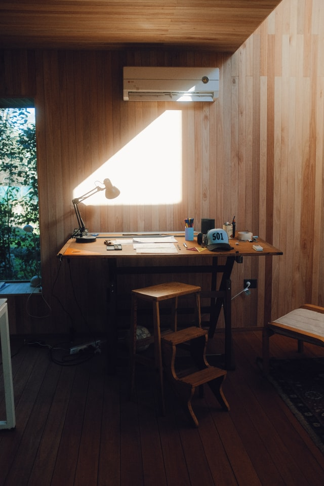
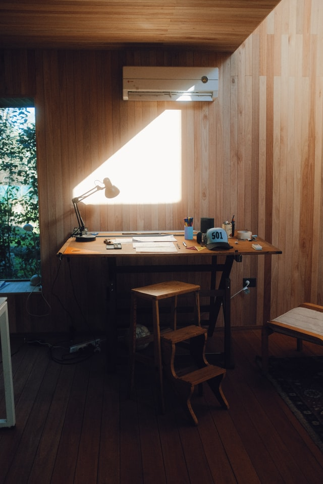

About Me
I’m currently working to further develop my technical skills through the Year Up program at Seattle Central college where I’m enrolled in the app development and testing track. I’ve previously completed the User Experience Design certificate program at Bellevue college. I enjoy creating unique, user-minded webpages that reflect my creativity and convey a clear purpose to the audience and my goal is to find a project manager opportunity in tech to apply my skills within the greater Seattle area.